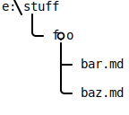

Expand-DirectoryNavigation
🔖 Synopsis
Expand directory link targets one level to links to contained markdown files.
Syntax
Expand-DirectoryNavigation [-LiteralPath] <String> [-NavSpec] <Object> [<CommonParameters>]
Description
Scans a collection of navigation links for link targets pointing to directories and inserts links to all directly contained markdown files.
Parameters
LiteralPath <String>
Absolute path to the directory the navigation itens are relative to. Usually this is the path to the directory containing the
Build.jsonfile the navigation items are from or the directory configured bymarkdown_dirif the navigation items are from the top-levelBuild.jsonfile.
Parameter Property Value Required? true Position? 1 Default value `` Accept pipeline input? false Accept wildcard characters? false
NavSpec <Object>
The specification of a single navigation item as specified in
ConvertTo-NavigationItem.
Parameter Property Value Required? true Position? 2 Default value `` Accept pipeline input? true (ByValue) Accept wildcard characters? false
Inputs
Specifications of navigation items as specified in
ConvertTo-NavigationItem.
Outputs
Specification of navigation items as specified in
ConvertTo-NavigationItem where all links to directories
are replaced by links to the directory contents (one level).
Examples
EXAMPLE 1
@{'My Directory' = 'foo'} | Expand-DirectoryNavigation -LiteralPath e:\stuff
Expands the directory foo which is a subdirectory of e:\stuff.
Assuming the following directory structure and content:

where bar.md and baz.md are two markdown files.
This expands to:
@{'My Directory' = ""} # <- label
@{'bar' = "foo/bar.md"} # <- link
@{'baz' = "foo/baz.md"} # <- link
Related Links
- https://wethat.github.io/MarkdownToHtml/2.8/Expand-DirectoryNavigation.html
ConvertTo-NavigationItem
Module: MarkDownToHTML; Version: 2.8.0; (c) 2018-2022 WetHat Lab. All rights reserved.